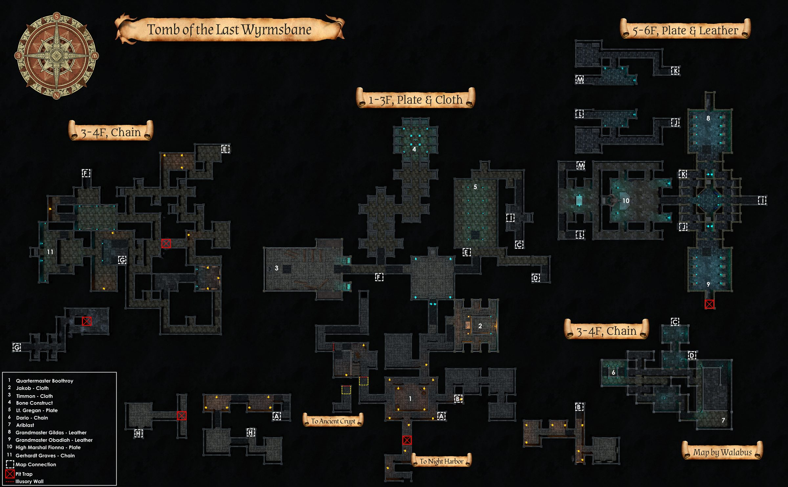
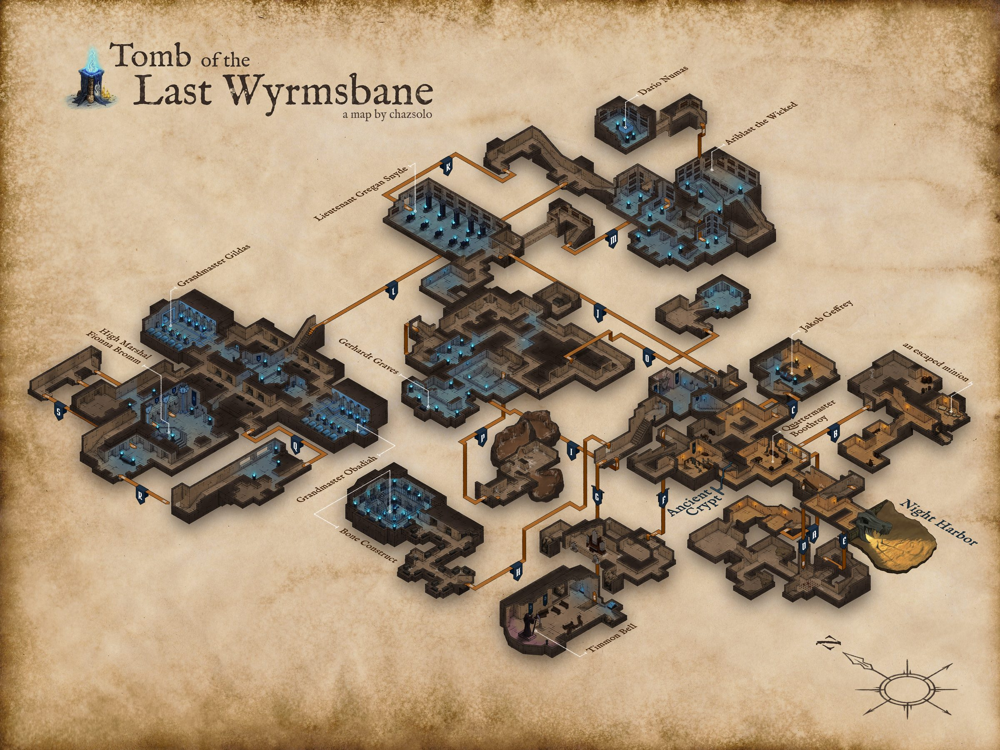
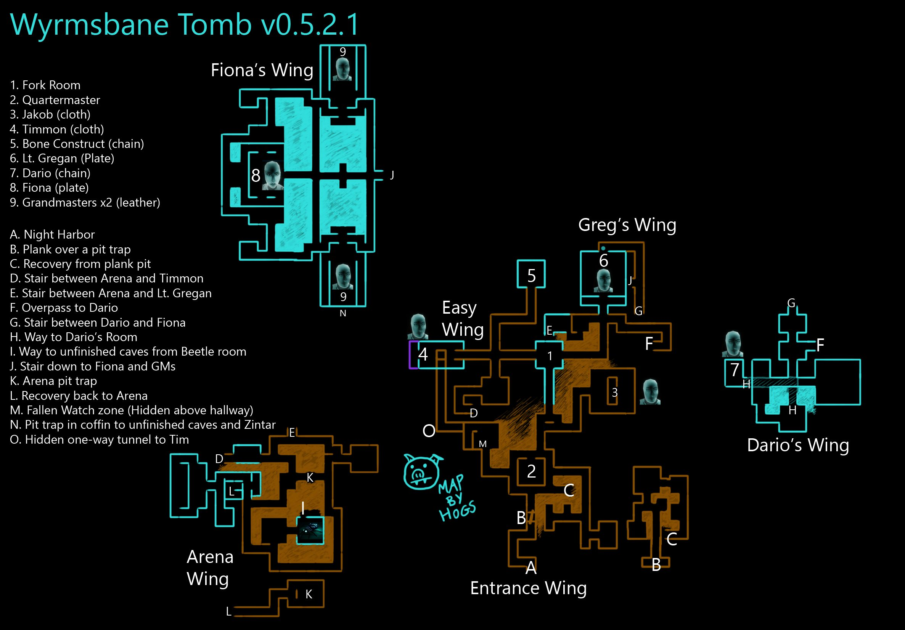
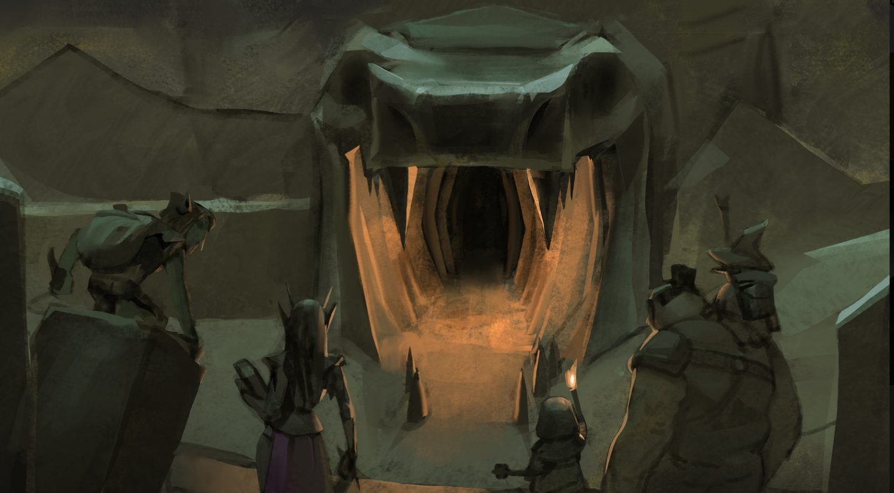

Tomb of the Last Wyrmsbane
"Our name, our place, and our tomb, all forgotten,
Map




1. Fork Room 2. Quartermaster Boothroy 3. Jakob Geffrey 4. Chapel Room with Timmon Bell 5. Bone Construct room 6. Archer Hall Way with Lieutenant Gregan Snyde 7. Dario Numas room 8. Dragon Skull Room with High Marshal Fionna 9. Grandmaster Gildas and Grandmaster Obadiah ___ A. Night Harbor zoneline B. Pit Trap with Plank C. Recovery from 'B' Pit Trap D. Stairs E. Stairs F. Passage to Dario Numas G. Stairs H. ? I. To Basement filled with Deep Beetles J. Stairs K. Pit Trap L. Recovery from 'K' Pit Trap M. Ancient Crypt zoneline (hidden above hallway) N. Pit Trap O. Hidden passage to Chapel Room
Named mobs
| Named | Lvl | Race / class | Where | Known loot (hover) |
|---|---|---|---|---|
| Timmon Bell | ~8 | Ghost | Chapel room | Enchanted Battle Worn Sceptre, Words of the Crusader Priest, Wyrmsbane Clergy Rosary, Knucklehide Chausses, Bellkeeper's Sash, Ancient Tattered Wyrmsbane Cloth |
| Jakob Geffrey | ~8 | Ghost | Altar room | Ring of the Deacon, Robe of the Deacon, Penitential Veil, Whispering Hours Pendant, Ancient Tattered Wyrmsbane Cloth |
| Lieutenant Gregan Snyde | 10 | Ghost | skeletal marksman hallway | Wyrmsbane Lieutenant's Medallion, Lieutenant's Hunting Pants, Lieutenant's Legplates, Great Sword of the Dragon Crusader, Ancient Corroded Wyrmsbane Plate |
| Ariblast the Wicked | 10 | Skeleton | - | Ancient Painted Urn, Graverobber's Hood, Moldering Robes, Skeletal Sight, Wicked Longbow |
| Dario Numas | 10 | Ghost / Ranger | - | Dagger of the Damned, Bow of the Fallen Ranger, Fallen Ranger Hide Bracer, Tattered Field Pack, Ancient Eroded Wyrmsbane Chain |
| Grandmaster Obadiah | 10 | Ghost / Monk | - | Ancient Idol, Shawl of Piety, Swift Brawler's Cloak, Obadiah's Marchers, Ancient Rotting Wyrmsbane Leather |
| Grandmaster Gildas | 10 | Ghost / Monk | - | Oak Wood Bo Staff, Wyrmsbane Grandmaster's Earring, Swift Brawler's Cloak, Grandmaster's Dark Leather Hood, Ancient Rotting Wyrmsbane Leather |
| High Marshal Fionna | ~16 | Ghost / Paladin | Bottom of Wyrmsbane under a big dragon skull | Kezessthra's Bane, Shield of the Dragon Crusader, Wyrmsbane Insignia Cloak, Marshal's Insignia Bracers, Engraved Amulet, Ancient Corroded Wyrmsbane Plate |
| Bone Construct | 20 | Skeleton | - | Idol of Bone, Chain of the Construct, Bone Construct's Head |
| Quartermaster Boothroy | - | Zombie | room directly in front of the pit trap | |
| Gerhardt Graves | - | Ghost / Archer | - | Suede Leather Mask, Drakeling Skewer, Ancient Eroded Wyrmsbane Boots, Ancient Eroded Wyrmsbane Wristguard, Ancient Eroded Wyrmsbane Waistguard |
| Raid Named | Level | Race / Class | Location | Known Loot |
| an escaped minion | - | Skeleton | - | Bloodied Human Head |
Mobs & NPCs (camps by level)
Rows with a level are huntable camps; rows without are usually town NPCs or not yet documented.
| Name | Lvl | Race | Class | Where | Notes |
|---|---|---|---|---|---|
| a skeletal fighter | 3 - 10 | Skeleton | - | - | |
| a skeletal warrior | 4 - 11 | Skeleton | - | - | |
| a skeletal cavalier | 6 - 10 | Skeleton | - | - | |
| a Wyrmsbane crusader | 14 | Ghost | Paladin | - | |
| a giant spider | - | Spider | - | - | |
| a risen zombie | - | Zombie | - | - | |
| a roving ghoul | - | Ghoul | - | - | |
| a skeletal archer | - | Skeleton | - | - | |
| a skeletal champion | - | Skeleton | - | - | |
| a skeletal cleric | - | Skeleton | - | - | |
| a skeletal deacon | - | Skeleton | - | - | |
| a skeletal defender | - | Skeleton | - | - | |
| a skeletal knight | - | Skeleton | - | - | |
| a skeletal marksman | - | Skeleton | - | - | |
| a skeletal monk | - | Skeleton | - | - | |
| a skeletal priest | - | Skeleton | - | - | |
| a skeletal vicar | - | Skeleton | - | - | |
| a small deep beetle | - | Beetle | - | - | |
| a spiderling | - | Spider | - | - | |
| a zombie laborer | - | Zombie | - | - | |
| a zombie provisioner | - | Zombie | - | - |
Quests
| Quest | Reward | Giver | Min lvl |
|---|---|---|---|
| The Missing Apprentice | Bloodied Bone | Everett Graves | 1 |
| Wyrmsbane Armor Quest | Wyrmsbane Cloth Set, Wyrmsbane Leather Set, Wyrmsbane Chain Set, Wyrmsbane Plate Set | Matheus Griswald | 1 |
| The Yowling | Ancient Chant, Ashira Pack Ring | Unusual Jackal Pelt | 1 |
| Necromancer Starter Quest (Night Harbor) | Black and Gold Robe Symbol of the Concourse of Souls | Marvion Hallows | 8 |
| Shaman Starter Quest (Night Harbor) | Awakened Spirit Pouch | Errol Shrewtender | 8 |
| Wizard Starter Quest (Night Harbor) | Gilded Academy Student's Robe | Olvin Viscus | 4 |
| Paladin Starter Quest (Night Harbor) | Tattered Field Pack | Dario Numas | 1 |
Gear that drops here
| Slot | Item | Key stats (wiki) | How to get | Lvl | Classes |
|---|---|---|---|---|---|
| Bone Chips | no stats listed on wiki | Quest: Bone Chips for Moon Dances (Moon Dances, Faelindral, min lvl 1) Quest: Bone Chips for Squire Ryland (Squire Ryland, Night Harbor, min lvl 1) Quest: Druid Starter Quest (Faelindral) (Sylvarya Starveil, Faelindral, min lvl 1) Quest: Find Delilah's Pet (Delilah, Underdocks, min lvl 1) | 1 | NEC SHD | |
| Primary, Secondary | Cracked Staff | DMG 6 / DLY 33 | Drop: A rotting skeleton (lvl 1) — Night Harbor, Noob Yard Drop: a risen skeleton (lvl 13) — Night Harbor, Crypt (Night) Drop: an ashira lookout (lvl -) — Sungreet Strand, - Drop: an ashira warrior (lvl 6-7) — Sungreet Strand, - | 1 | All classes |
| Primary, Secondary | Rusty Axe | DMG 6 / DLY 42 | Drop: A skeletal warrior (lvl 4 - 11) — Tomb of the Last Wyrmsbane, - Drop: A skeletal cleric (lvl -) — Tomb of the Last Wyrmsbane, - Drop: A skeletal fighter (lvl 3 - 10) — Tomb of the Last Wyrmsbane, - Drop: a skeletal priest (lvl -) — Tomb of the Last Wyrmsbane, - | 1 | BST FTR INQ PAL RNG SHD SPB |
| Primary | Rusty Battle Axe | DMG 10 / DLY 54 | Drop: A rotting skeleton (lvl 1) — Night Harbor, Noob Yard Drop: an ashira warrior (lvl -) — Night Harbor, Noob Yard Drop: A skeletal warrior (lvl 4 - 11) — Tomb of the Last Wyrmsbane, - Drop: a skeletal deacon (lvl -) — Tomb of the Last Wyrmsbane, - | 1 | BST FTR INQ PAL SHD |
| Primary, Secondary | Rusty Dagger | DMG 4 / DLY 24 | Vendor: A scrap dealer — Evershade Weald; A used weapons dealer — Night Harbor, Shallow Shoals; Evershade Weald Drop: an ashira warrior (lvl 6-7) — Sungreet Strand, - Drop: a Bloodynose quarreler (lvl ~8-10) — Sungreet Strand, Tel Ekir Goblin Entrance Drop: a sullen farmhand (lvl unconfirmed) — Sungreet Strand | 1 | ARC BRD BST ELE ENC FTR INQ NEC RNG ROG SHD SHM SPB WIZ |
| Primary | Rusty Great Scythe | DMG 8 / DLY 46 | Drop: A rotting skeleton (lvl 1) — Night Harbor, Noob Yard Drop: a market peddler (lvl unconfirmed) — Night Harbor Drop: A skeletal warrior (lvl 4 - 11) — Tomb of the Last Wyrmsbane, - Drop: a skeletal monk (lvl -) — Tomb of the Last Wyrmsbane, - | 1 | BST DRU FTR INQ NEC RNG SHD SPB |
| Primary | Rusty Greatsword | DMG 9 / DLY 50 | Drop: a skeleton (lvl unconfirmed) — Shaded Dunes Drop: a stumbling zombie (lvl unconfirmed) — Shaded Dunes Drop: a bandit (lvl 10-13) — Shaded Dunes, - Drop: a smuggler (lvl unconfirmed) — Shaded Dunes | 1 | ARC BRD BST FTR INQ PAL RNG SHD SPB |
| Primary | Rusty Long Spear | DMG 9 / DLY 48 | Drop: an ashira warrior (lvl 6-7) — Sungreet Strand, - Drop: a Bloodynose quarreler (lvl ~8-10) — Sungreet Strand, Tel Ekir Goblin Entrance Drop: an ashira lookout (lvl -) — Sungreet Strand, - Drop: an ashira shaman (lvl -) — Sungreet Strand, - | 1 | ARC BRD BST FTR INQ RNG ROG SHD SHM |
| Primary, Secondary | Rusty Longsword | DMG 6 / DLY 38 | Drop: an ashira shaman (lvl -) — Sungreet Strand, - Drop: an ashira warrior (lvl 6-7) — Sungreet Strand, - Drop: a Bloodynose quarreler (lvl ~8-10) — Sungreet Strand, Tel Ekir Goblin Entrance Drop: an ashira lookout (lvl -) — Sungreet Strand, - | 1 | ARC BRD BST FTR INQ PAL RNG ROG SHD SPB WIZ |
| Primary, Secondary | Rusty Mace | DMG 6 / DLY 40 | Vendor: A scrap dealer — Evershade Weald; A used weapons dealer — Night Harbor, Shallow Shoals; Evershade Weald Drop: an ashira lookout (lvl -) — Sungreet Strand, - Drop: an ashira shaman (lvl -) — Sungreet Strand, - Drop: a Bloodynose quarreler (lvl ~8-10) — Sungreet Strand, Tel Ekir Goblin Entrance | 1 | BRD BST CLR DRU FTR INQ MNK PAL RNG ROG SHD SHM SPB |
| Primary | Rusty Maul | DMG 10 / DLY 52 | Drop: A skeletal cavalier (lvl 6 - 10) — Tomb of the Last Wyrmsbane, - Drop: A skeletal fighter (lvl 3 - 10) — Tomb of the Last Wyrmsbane, - Drop: a skeletal deacon (lvl -) — Tomb of the Last Wyrmsbane, - Drop: a skeletal warrior (lvl 4 - 11) — Tomb of the Last Wyrmsbane, - | 1 | BRD BST CLR DRU FTR INQ MNK PAL RNG ROG SHD SHM SPB |
| Primary, Secondary | Rusty Scimitar | DMG 5 / DLY 36 | Drop: A rotting skeleton (lvl 1) — Night Harbor, Noob Yard Drop: a goblin troublemaker (lvl 9) — Night Harbor, Docks Drop: a stumbling zombie (lvl unconfirmed) — Shaded Dunes Drop: a skeleton (lvl unconfirmed) — Shaded Dunes | 1 | ARC BRD BST DRU FTR INQ PAL RNG ROG SHD SPB WIZ |
| Primary, Secondary | Rusty Scythe | DMG 4 / DLY 28 | Drop: a skeleton (lvl unconfirmed) — Shaded Dunes Drop: a bandit (lvl 10-13) — Shaded Dunes, - Drop: an ashira warrior (lvl -) — Shaded Dunes, - Drop: a wererat (lvl unconfirmed) — Shaded Dunes | 1 | BST DRU FTR INQ NEC RNG SHD SPB |
| Primary, Secondary | Rusty Shortsword | DMG 4 / DLY 26 | Vendor: A scrap dealer — Evershade Weald; A used weapons dealer — Night Harbor, Shallow Shoals; Evershade Weald Drop: an ashira warrior (lvl 6-7) — Sungreet Strand, - Drop: an ashira lookout (lvl -) — Sungreet Strand, - Drop: a hired thug (lvl 9-10) — Sungreet Strand, Ameen Farm | 1 | ARC BRD BST FTR INQ PAL RNG ROG SHD SHM SPB WIZ |
| Primary, Secondary | Rusty Spear | DMG 5 / DLY 34 | Vendor: A scrap dealer — Evershade Weald; Evershade Weald; a scrap dealer Drop: an ashira warrior (lvl 6-7) — Sungreet Strand, - Drop: an ashira lookout (lvl -) — Sungreet Strand, - Drop: a rotting skeleton (lvl unconfirmed) — Sungreet Strand | 1 | ARC BRD BST FTR INQ RNG ROG SHD SHM |
| Secondary | Rusty Tower Shield | AC 4 | Drop: an ashira lookout (lvl -) — Sungreet Strand, - Drop: a Bloodynose quarreler (lvl ~8-10) — Sungreet Strand, Tel Ekir Goblin Entrance Drop: an ashira warrior (lvl 6-7) — Sungreet Strand, - Drop: a Bloodynose fumer (lvl ~8-10) — Sungreet Strand, Tel Ekir Goblin Entrance | 1 | FTR INQ PAL SHD |
| Primary, Secondary | Rusty Trident | DMG 5 / DLY 32 | Drop: an ashira lookout (lvl -) — Sungreet Strand, - Drop: an ashira warrior (lvl 6-7) — Sungreet Strand, - Drop: a Bloodynose quarreler (lvl ~8-10) — Sungreet Strand, Tel Ekir Goblin Entrance Drop: an ashira shaman (lvl -) — Sungreet Strand, - | 1 | ARC BRD BST FTR INQ RNG ROG SHD SHM |
| Primary | Rusty War Lance | DMG 9 / DLY 48 | Drop: an ashira warrior (lvl 6-7) — Sungreet Strand, - Drop: a hired thug (lvl 9-10) — Sungreet Strand, Ameen Farm Drop: a rotting skeleton (lvl unconfirmed) — Sungreet Strand Drop: an ashira lookout (lvl -) — Sungreet Strand, - | 1 | FTR INQ PAL SHD |
| Primary, Secondary | Rusty Warhammer | DMG 4 / DLY 30 | Drop: A skeletal fighter (lvl 3 - 10) — Tomb of the Last Wyrmsbane, - Drop: A skeletal marksman (lvl -) — Tomb of the Last Wyrmsbane, - Drop: a skeletal warrior (lvl 4 - 11) — Tomb of the Last Wyrmsbane, - Drop: a skeletal monk (lvl -) — Tomb of the Last Wyrmsbane, - | 1 | BRD BST CLR DRU FTR INQ MNK PAL RNG ROG SHD SHM SPB |
| Waist | Tattered Cloth Belt | AC 1 | Drop: A rotting skeleton (lvl 1) — Night Harbor, Noob Yard Drop: a cackling skeleton (lvl 15) — Night Harbor, Crypt (Night) Drop: a goblin troublemaker (lvl 9) — Night Harbor, Docks Drop: an ashira scout (lvl 2) — Night Harbor, Noob Yard | 1 | All classes |
| Feet | Tattered Cloth Boots | AC 1 | Drop: A rotting skeleton (lvl 1) — Night Harbor, Noob Yard Drop: an ashira scout (lvl 2) — Night Harbor, Noob Yard Drop: a goblin drunk (lvl -) — Night Harbor, Docks Drop: a goblin squatter (lvl 10) — Night Harbor, Docks | 1 | All classes |
| Wrist | Tattered Cloth Bracer | AC 1 | Drop: A skeletal fighter (lvl 3 - 10) — Tomb of the Last Wyrmsbane, - Drop: A skeletal warrior (lvl 4 - 11) — Tomb of the Last Wyrmsbane, - Drop: A skeletal cleric (lvl -) — Tomb of the Last Wyrmsbane, - Drop: A skeletal knight (lvl -) — Tomb of the Last Wyrmsbane, - | 1 | All classes |
| Head | Tattered Cloth Cap | AC 1 | Drop: A rotting skeleton (lvl 1) — Night Harbor, Noob Yard Drop: a goblin squatter (lvl 10) — Night Harbor, Docks Drop: a goblin troublemaker (lvl 9) — Night Harbor, Docks Drop: a goblin drunk (lvl -) — Night Harbor, Docks | 1 | All classes |
| Back | Tattered Cloth Cape | AC 1 | Drop: A rotting skeleton (lvl 1) — Night Harbor, Noob Yard Drop: a risen skeleton (lvl 13) — Night Harbor, Crypt (Night) Drop: a cackling skeleton (lvl 15) — Night Harbor, Crypt (Night) Drop: a goblin drunk (lvl -) — Night Harbor, Docks | 1 | All classes |
| Hands | Tattered Cloth Gloves | AC 1 | Drop: A rotting skeleton (lvl 1) — Night Harbor, Noob Yard Drop: a begrudging farmer (lvl unconfirmed) — Night Harbor Drop: a stumbling skeleton (lvl 14) — Night Harbor, Crypt (Night) Drop: a goblin drunk (lvl -) — Night Harbor, Docks | 1 | All classes |
| Neck | Tattered Cloth Gorget | AC 1 | Drop: A rotting skeleton (lvl 1) — Night Harbor, Noob Yard Drop: a goblin drunk (lvl -) — Night Harbor, Docks Drop: a goblin troublemaker (lvl 9) — Night Harbor, Docks Drop: a goblin squatter (lvl 10) — Night Harbor, Docks | 1 | All classes |
| Shoulders | Tattered Cloth Mantle | AC 1 | Drop: A skeletal fighter (lvl 3 - 10) — Tomb of the Last Wyrmsbane, - Drop: A skeletal monk (lvl -) — Tomb of the Last Wyrmsbane, - Drop: A skeletal warrior (lvl 4 - 11) — Tomb of the Last Wyrmsbane, - Drop: A skeletal defender (lvl -) — Tomb of the Last Wyrmsbane, - | 1 | All classes |
| Legs | Tattered Cloth Pantaloons | AC 1 | Drop: A skeletal fighter (lvl 3 - 10) — Tomb of the Last Wyrmsbane, - Drop: A skeletal warrior (lvl 4 - 11) — Tomb of the Last Wyrmsbane, - Drop: A skeletal defender (lvl -) — Tomb of the Last Wyrmsbane, - Drop: A skeletal cavalier (lvl 6 - 10) — Tomb of the Last Wyrmsbane, - | 1 | All classes |
| Chest | Tattered Cloth Robe | AC 2 | Drop: A rotting skeleton (lvl 1) — Night Harbor, Noob Yard Drop: a cackling skeleton (lvl 15) — Night Harbor, Crypt (Night) Drop: a goblin squatter (lvl 10) — Night Harbor, Docks Drop: a goblin gambler (lvl -) — Night Harbor, Docks | 1 | ELE ENC NEC WIZ |
| Shirt | Tattered Cloth Shirt | no stats listed on wiki | Drop: A rotting skeleton (lvl 1) — Night Harbor, Noob Yard Drop: a stumbling skeleton (lvl 14) — Night Harbor, Crypt (Night) Drop: a cackling skeleton (lvl 15) — Night Harbor, Crypt (Night) Drop: a goblin troublemaker (lvl 9) — Night Harbor, Docks | 1 | All classes |
| Chest | Tattered Cloth Tunic | AC 2 | Drop: A skeletal cleric (lvl -) — Tomb of the Last Wyrmsbane, - Drop: A skeletal fighter (lvl 3 - 10) — Tomb of the Last Wyrmsbane, - Drop: A skeletal warrior (lvl 4 - 11) — Tomb of the Last Wyrmsbane, - Drop: A skeletal priest (lvl -) — Tomb of the Last Wyrmsbane, - | 1 | All classes |
| Face | Tattered Cloth Veil | AC 1 | Drop: A rotting skeleton (lvl 1) — Night Harbor, Noob Yard Drop: a cackling skeleton (lvl 15) — Night Harbor, Crypt (Night) Drop: a goblin drunk (lvl -) — Night Harbor, Docks Drop: a goblin squatter (lvl 10) — Night Harbor, Docks | 1 | All classes |
| Tattered Field Pack | no stats listed on wiki | Quest: Paladin Starter Quest (Night Harbor) (-, Night Harbor, min lvl 1) Named drop: Dario Numas (lvl 10) — Tomb of the Last Wyrmsbane, - | 1 | PAL | |
| Primary, Secondary | Torch | Effect: Torch (Passive. Must Equip. Level: 1) | Quest: Pests at the Farm (Farmer Ammar, Night Harbor, min lvl 1) Vendor: A goods merchant — Night Harbor, Shallow Shoals; A greedy halfling — Night Harbor; A shifty elf — Evershade Weald Crafted: Survival (trivial X) Drop: A rotting skeleton (lvl 1) — Night Harbor, Noob Yard | 1 | All classes |
| Secondary | Worn Buckler | AC 2 | Drop: an ashira shaman (lvl -) — Sungreet Strand, - Drop: an ashira lookout (lvl -) — Sungreet Strand, - Drop: an ashira warrior (lvl 6-7) — Sungreet Strand, - Drop: a Bloodynose scarer (lvl ~8-10) — Sungreet Strand, Tel Ekir Goblin Entrance | 1 | BRD BST CLR DRU FTR INQ PAL RNG ROG SHD SHM SPB |
| Primary | Worn Great Staff | DMG 10 / DLY 39 | Drop: an ashira shaman (lvl -) — Sungreet Strand, - Drop: an ashira warrior (lvl 6-7) — Sungreet Strand, - Drop: a Bloodynose quarreler (lvl ~8-10) — Sungreet Strand, Tel Ekir Goblin Entrance Drop: a smarmy hunter (lvl unconfirmed) — Sungreet Strand | 1 | BST CLR DRU ELE ENC FTR MNK NEC PAL SHM SPB WIZ |
| Ancient Painted Urn | no stats listed on wiki | Quest: Shaman Starter Quest (Night Harbor) (Errol Shrewtender, Night Harbor, min lvl 1) Named drop: Ariblast the Wicked (lvl 10) — Tomb of the Last Wyrmsbane, - | 1 | class unconfirmed | |
| Secondary | Rusty Kite Shield | AC 3 | Drop: an ashira shaman (lvl -) — Sungreet Strand, - Drop: an ashira warrior (lvl 6-7) — Sungreet Strand, - Drop: a Bloodynose scarer (lvl ~8-10) — Sungreet Strand, Tel Ekir Goblin Entrance Drop: a filthy henchman (lvl unconfirmed) — Sungreet Strand | 3 | BRD CLR FTR INQ PAL RNG SHD |
| Waist | Tattered Rawhide Belt | AC 1 | Drop: A skeletal warrior (lvl 4 - 11) — Tomb of the Last Wyrmsbane, - Drop: A skeletal monk (lvl -) — Tomb of the Last Wyrmsbane, - Drop: a skeletal cleric (lvl -) — Tomb of the Last Wyrmsbane, - Drop: a risen zombie (lvl -) — Tomb of the Last Wyrmsbane, - | 3 | ARC BRD BST CLR DRU FTR INQ MNK PAL RNG ROG SHD SHM SPB |
| Back | Tattered Rawhide Cloak | AC 1 | Drop: A skeletal marksman (lvl -) — Tomb of the Last Wyrmsbane, - Drop: A skeletal warrior (lvl 4 - 11) — Tomb of the Last Wyrmsbane, - Drop: A skeletal cavalier (lvl 6 - 10) — Tomb of the Last Wyrmsbane, - Drop: A skeletal cleric (lvl -) — Tomb of the Last Wyrmsbane, - | 3 | ARC BRD BST CLR DRU FTR INQ MNK PAL RNG ROG SHD SHM SPB |
| Feet | Tattered Rawhide Boots | AC 2 | Drop: A skeletal warrior (lvl 4 - 11) — Tomb of the Last Wyrmsbane, - Drop: A skeletal cleric (lvl -) — Tomb of the Last Wyrmsbane, - Drop: A skeletal archer (lvl -) — Tomb of the Last Wyrmsbane, - Drop: A skeletal cavalier (lvl 6 - 10) — Tomb of the Last Wyrmsbane, - | 4 | ARC BRD BST CLR DRU FTR INQ MNK PAL RNG ROG SHD SHM SPB |
| Wrist | Tattered Rawhide Bracer | AC 2 | Drop: A skeletal warrior (lvl 4 - 11) — Tomb of the Last Wyrmsbane, - Drop: A skeletal defender (lvl -) — Tomb of the Last Wyrmsbane, - Drop: A skeletal marksman (lvl -) — Tomb of the Last Wyrmsbane, - Drop: a skeletal priest (lvl -) — Tomb of the Last Wyrmsbane, - | 4 | ARC BRD BST CLR DRU FTR INQ MNK PAL RNG ROG SHD SHM SPB |
| Head | Tattered Rawhide Cap | AC 2 | Drop: A skeletal warrior (lvl 4 - 11) — Tomb of the Last Wyrmsbane, - Drop: A skeletal marksman (lvl -) — Tomb of the Last Wyrmsbane, - Drop: a skeletal knight (lvl -) — Tomb of the Last Wyrmsbane, - Drop: a risen zombie (lvl -) — Tomb of the Last Wyrmsbane, - | 4 | ARC BRD BST CLR DRU FTR INQ MNK PAL RNG ROG SHD SHM SPB |
| Hands | Tattered Rawhide Gloves | AC 2 | Drop: A skeletal warrior (lvl 4 - 11) — Tomb of the Last Wyrmsbane, - Drop: A skeletal priest (lvl -) — Tomb of the Last Wyrmsbane, - Drop: A skeletal marksman (lvl -) — Tomb of the Last Wyrmsbane, - Drop: a skeletal monk (lvl -) — Tomb of the Last Wyrmsbane, - | 4 | ARC BRD BST CLR DRU FTR INQ MNK PAL RNG ROG SHD SHM SPB |
| Neck | Tattered Rawhide Gorget | AC 1 | Drop: a skeleton (lvl unconfirmed) — Sungreet Strand Drop: an ashira warrior (lvl 6-7) — Sungreet Strand, - Drop: a Bloodynose quarreler (lvl ~8-10) — Sungreet Strand, Tel Ekir Goblin Entrance Drop: a hired thug (lvl 9-10) — Sungreet Strand, Ameen Farm | 4 | ARC BRD BST CLR DRU FTR INQ MNK PAL RNG ROG SHD SHM SPB |
| Legs | Tattered Rawhide Leggings | AC 2 | Drop: A skeletal warrior (lvl 4 - 11) — Tomb of the Last Wyrmsbane, - Drop: A skeletal monk (lvl -) — Tomb of the Last Wyrmsbane, - Drop: A skeletal defender (lvl -) — Tomb of the Last Wyrmsbane, - Drop: A skeletal priest (lvl -) — Tomb of the Last Wyrmsbane, - | 4 | ARC BRD BST CLR DRU FTR INQ MNK PAL RNG ROG SHD SHM SPB |
| Face | Tattered Rawhide Mask | AC 1 | Drop: A skeletal marksman (lvl -) — Tomb of the Last Wyrmsbane, - Drop: A skeletal warrior (lvl 4 - 11) — Tomb of the Last Wyrmsbane, - Drop: A skeletal cavalier (lvl 6 - 10) — Tomb of the Last Wyrmsbane, - Drop: a skeletal monk (lvl -) — Tomb of the Last Wyrmsbane, - | 4 | ARC BRD BST CLR DRU FTR INQ MNK PAL RNG ROG SHD SHM SPB |
| Shoulders | Tattered Rawhide Shoulderpads | AC 2 | Drop: A skeletal warrior (lvl 4 - 11) — Tomb of the Last Wyrmsbane, - Drop: A risen zombie (lvl -) — Tomb of the Last Wyrmsbane, - Drop: A skeletal marksman (lvl -) — Tomb of the Last Wyrmsbane, - Drop: A skeletal priest (lvl -) — Tomb of the Last Wyrmsbane, - | 4 | ARC BRD BST CLR DRU FTR INQ MNK PAL RNG ROG SHD SHM SPB |
| Chest | Tattered Rawhide Tunic | AC 3 | Drop: A skeletal marksman (lvl -) — Tomb of the Last Wyrmsbane, - Drop: A skeletal warrior (lvl 4 - 11) — Tomb of the Last Wyrmsbane, - Drop: a skeletal vicar (lvl -) — Tomb of the Last Wyrmsbane, - Drop: a risen zombie (lvl -) — Tomb of the Last Wyrmsbane, - | 4 | ARC BRD BST CLR DRU FTR INQ MNK PAL RNG ROG SHD SHM SPB |
| Shirt | Tattered Rawhide Vest | no stats listed on wiki | Drop: A skeletal warrior (lvl 4 - 11) — Tomb of the Last Wyrmsbane, - Drop: A skeletal knight (lvl -) — Tomb of the Last Wyrmsbane, - Drop: a skeletal priest (lvl -) — Tomb of the Last Wyrmsbane, - Drop: a skeletal defender (lvl -) — Tomb of the Last Wyrmsbane, - | 4 | ARC BRD BST CLR DRU FTR INQ MNK PAL RNG ROG SHD SHM SPB |
| Waist | Bellkeeper's Sash | AC 2, STR +1, STA +1, DEX +1 | Named drop: Timmon Bell (lvl ~8) — Tomb of the Last Wyrmsbane, Chapel room | 8 | ARC BRD BST FTR INQ MNK PAL RNG ROG SHD SPB |
| Primary, Secondary | Enchanted Battleworn Mace | DMG 8 / DLY 32, INT +1, WIS +2, Mana +5, SV Magic +1 | Named drop: Timmon Bell (lvl ~8) — Tomb of the Last Wyrmsbane, Chapel room | 8 | BRD BST CLR DRU FTR INQ MNK PAL RNG ROG SHD SHM SPB |
| Legs | Knucklehide Chausses | AC 6, STR +2, AGI +1 | Named drop: Timmon Bell (lvl ~8) — Tomb of the Last Wyrmsbane, Chapel room | 8 | ARC BRD BST CLR DRU FTR INQ MNK PAL RNG ROG SHD SHM SPB |
| Face | Penitential Veil | AC 2, HP +5, Mana +10 | Named drop: Jakob Geffrey (lvl ~8) — Tomb of the Last Wyrmsbane, Altar room | 8 | All classes |
| Finger | Ring of the Deacon | INT +1, WIS +1, CHA +1, Mana +5 | Named drop: Jakob Geffrey (lvl ~8) — Tomb of the Last Wyrmsbane, Altar room | 8 | BRD BST CLR DRU ELE ENC INQ NEC PAL RNG SHD SHM SPB WIZ |
| Chest | Robe of the Deacon | AC 5, INT +2, CHA +1 | Named drop: Jakob Geffrey (lvl ~8) — Tomb of the Last Wyrmsbane, Altar room | 8 | ELE ENC NEC WIZ |
| Neck | Whispering Hours Pendant | CHA +1, Mana +10 | Named drop: Jakob Geffrey (lvl ~8) — Tomb of the Last Wyrmsbane, Altar room | 8 | All classes |
| Primary, Secondary | Words of the Crusader Priest | INT +1, WIS +1, Mana +5 | Named drop: Timmon Bell (lvl ~8) — Tomb of the Last Wyrmsbane, Chapel room | 8 | CLR DRU ELE ENC INQ NEC PAL RNG SHD SHM WIZ |
| Neck | Wyrmsbane Clergy Rosary | WIS +1, Mana +10 | Named drop: Timmon Bell (lvl ~8) — Tomb of the Last Wyrmsbane, Chapel room | 8 | All classes |
| Range | Ancient Idol | AC 5, STR +2, STA +1, HP +15 | Named drop: Grandmaster Obadiah (lvl 10) — Tomb of the Last Wyrmsbane, - | 10 | All classes |
| Range | Bow of the Fallen Ranger | DMG 12 / DLY 39, STR +2, AGI +1, HP +5, Mana +5 | Named drop: Dario Numas (lvl 10) — Tomb of the Last Wyrmsbane, - | 10 | ARC BST FTR INQ PAL RNG ROG SHD SPB |
| Primary, Secondary | Dagger of the Damned | DMG 5 / DLY 22, STR +1, AGI +1, HP +5, Mana +5 | Named drop: Dario Numas (lvl 10) — Tomb of the Last Wyrmsbane, - | 10 | ARC BRD BST ELE ENC FTR INQ NEC RNG ROG SHD SHM SPB WIZ |
| Wrist | Fallen Ranger Hide Bracer | AC 6, STR +3, STA +1 | Named drop: Dario Numas (lvl 10) — Tomb of the Last Wyrmsbane, - | 10 | ARC BRD BST CLR DRU FTR INQ MNK PAL RNG ROG SHD SHM SPB |
| Head | Grandmaster's Dark Leather Hood | AC 6, STR +3, STA +1 | Named drop: Grandmaster Gildas (lvl 10) — Tomb of the Last Wyrmsbane, - | 10 | ARC BRD BST CLR DRU FTR INQ MNK PAL RNG ROG SHD SHM SPB |
| Head | Graverobber's Hood | AC 6, AGI +1, DEX +1, HP +10 | Named drop: Ariblast the Wicked (lvl 10) — Tomb of the Last Wyrmsbane, - | 10 | ARC BRD BST CLR DRU FTR INQ MNK PAL RNG ROG SHD SHM SPB |
| Primary | Great Sword of the Dragon Crusader | DMG 14 / DLY 45, STR +2, DEX +2, HP +20, SV Fire +3 | Named drop: Lieutenant Gregan Snyde (lvl 10) — Tomb of the Last Wyrmsbane, skeletal marksman hallway | 10 | ARC BRD BST FTR INQ PAL RNG SHD SPB |
| Legs | Lieutenant's Hunting Pants | AC 7, WIS +3, Mana +5 | Named drop: Lieutenant Gregan Snyde (lvl 10) — Tomb of the Last Wyrmsbane, skeletal marksman hallway | 10 | ARC BRD BST CLR DRU FTR INQ MNK PAL RNG ROG SHD SHM SPB |
| Legs | Lieutenant's Legplates | AC 7, STR +2 | Named drop: Lieutenant Gregan Snyde (lvl 10) — Tomb of the Last Wyrmsbane, skeletal marksman hallway | 10 | ARC BRD BST CLR DRU FTR INQ MNK PAL RNG ROG SHD SHM SPB |
| Chest | Moldering Robes | AC 5, INT +2, HP +5 | Named drop: Ariblast the Wicked (lvl 10) — Tomb of the Last Wyrmsbane, - | 10 | ELE ENC NEC WIZ |
| Primary | Oak Wood Bo Staff | DMG 11 / DLY 37, STR +4, AGI +3, HP +5 | Named drop: Grandmaster Gildas (lvl 10) — Tomb of the Last Wyrmsbane, - | 10 | MNK |
| Feet | Obadiah's Marchers | AC 5, STR +1, STA +1, DEX +2 | Named drop: Grandmaster Obadiah (lvl 10) — Tomb of the Last Wyrmsbane, - | 10 | ARC BRD BST CLR DRU FTR INQ MNK PAL RNG ROG SHD SHM SPB |
| Shoulders | Shawl of Piety | AC 5, INT +1, WIS +1, Mana +10 | Named drop: Grandmaster Obadiah (lvl 10) — Tomb of the Last Wyrmsbane, - | 10 | All classes |
| Face | Skeletal Sight | AC 2, STA +1, WIS +2 | Named drop: Ariblast the Wicked (lvl 10) — Tomb of the Last Wyrmsbane, - | 10 | BST CLR DRU PAL RNG SHM |
| Back | Swift Brawler's Cloak | AC 3, Haste +6 | Named drop: Grandmaster Gildas (lvl 10) — Tomb of the Last Wyrmsbane, - Named drop: Grandmaster Obadiah (lvl 10) — Tomb of the Last Wyrmsbane, - | 10 | All classes |
| Range | Wicked Longbow | DMG 12 / DLY 48, STA +1, AGI +2 | Named drop: Ariblast the Wicked (lvl 10) — Tomb of the Last Wyrmsbane, - | 10 | ARC BST FTR INQ PAL RNG ROG SHD SPB |
| Ear | Wyrmsbane Grandmaster's Earring | AC 2, STR +2, STA +1, SV Fire +3 | Named drop: Grandmaster Gildas (lvl 10) — Tomb of the Last Wyrmsbane, - | 10 | All classes |
| Neck | Wyrmsbane Lieutenant's Medallion | AC 2, STR +2, STA +2, HP +10 | Named drop: Lieutenant Gregan Snyde (lvl 10) — Tomb of the Last Wyrmsbane, skeletal marksman hallway | 10 | All classes |
| Primary, Secondary | Kazessthra's Bane | DMG 9 / DLY 34, STR +2, STA +2, HP +5, Mana +5 | Named drop: High Marshal Fionna (lvl ~16) — Tomb of the Last Wyrmsbane, Bottom of Wyrmsbane under a big dragon skull | 16 | ARC BRD BST FTR INQ PAL RNG ROG SHD SPB WIZ |
| Wrist | Marshal's Insignia Bracer | AC 6, STR +3, STA +1 | Named drop: High Marshal Fionna (lvl ~16) — Tomb of the Last Wyrmsbane, Bottom of Wyrmsbane under a big dragon skull Drop: High Marshal Fionna Bromm (lvl unconfirmed) — Tomb of the Last Wyrmsbane | 16 | ARC BRD BST CLR DRU FTR INQ MNK PAL RNG ROG SHD SHM SPB |
| Secondary | Shield of the Dragon Crusader | AC 11, STA +1, INT +2, WIS +2, HP +5, Mana +5 | Named drop: High Marshal Fionna (lvl ~16) — Tomb of the Last Wyrmsbane, Bottom of Wyrmsbane under a big dragon skull Drop: High Marshal Fionna Bromm (lvl unconfirmed) — Tomb of the Last Wyrmsbane | 16 | BRD BST CLR DRU FTR INQ PAL RNG ROG SHD SHM SPB |
| Back | Wyrmsbane Insignia Cloak | AC 3, STR +1, STA +1, AGI +1, DEX +1, INT +1, WIS +1, CHA +1, HP +10, Mana +10 | Named drop: High Marshal Fionna (lvl ~16) — Tomb of the Last Wyrmsbane, Bottom of Wyrmsbane under a big dragon skull | 16 | All classes |
| Chest | Calcified Scapula Cuirass | AC 68, STA +10, AGI +10 | Named drop: Bone Construct (lvl 20) — Tomb of the Last Wyrmsbane, - | 20 | FTR INQ PAL SHD |
| Waist | Chain of the Construct | AC 12, STR +8, DEX +6, Haste +14 | Named drop: Bone Construct (lvl 20) — Tomb of the Last Wyrmsbane, - | 20 | All classes |
| Primary | Giant Damaged Femur | DMG 13 / DLY 45, SV Corruption -5 | Named drop: Bone Construct (lvl 20) — Tomb of the Last Wyrmsbane, - | 20 | class unconfirmed |
| Primary | Giant Femur | DMG 42 / DLY 45, STR +28, STA +16, DEX +16 | Named drop: Bone Construct (lvl 20) — Tomb of the Last Wyrmsbane, - | 20 | BRD BST CLR DRU FTR INQ MNK PAL RNG ROG SHD SHM SPB |
| Secondary, Range | Idol of Bone | INT +13, CHA +11 | Named drop: Bone Construct (lvl 20) — Tomb of the Last Wyrmsbane, - | 20 | All classes |
| Wrist | Ossuary Spell Cuffs | AC 16, STA +5, INT +15, CHA +4 | Named drop: Bone Construct (lvl 20) — Tomb of the Last Wyrmsbane, - | 20 | ELE ENC NEC WIZ |
| Primary, Secondary | Rusty Steel Mace | DMG 13 / DLY 40 | Drop: a decaying drunk (lvl unconfirmed) — Glass Flats Drop: a fallen warden (lvl unconfirmed) — Glass Flats Drop: a herald (lvl unconfirmed) — Glass Flats Drop: an abyssal emissary (lvl ~48-50) — Glass Flats, - | 20 | BRD BST CLR DRU FTR INQ MNK PAL RNG ROG SHD SHM SPB |
| Head | Visage of the Bonecrusher | AC 41, STR +17, DEX +7 | Named drop: Bone Construct (lvl 20) — Tomb of the Last Wyrmsbane, - | 20 | BRD FTR INQ PAL RNG ROG SHD SHM |
| Primary | Rusty Steel Maul | DMG 16 / DLY 52 | Drop: a skeletal reveler (lvl unconfirmed) — Glass Flats Drop: a risen servant (lvl unconfirmed) — Glass Flats Drop: a wyrmseer (lvl ~48-50) — Glass Flats, - Drop: a fallen warden (lvl unconfirmed) — Glass Flats | 42 | BRD BST CLR DRU FTR INQ MNK PAL RNG ROG SHD SHM SPB |
| Wrist | Rusty Steel Plate Bracer | AC 15 | Drop: a Witchguard myrmidon (lvl unconfirmed) — Shallow Shoals Drop: a Plagueborn watchman (lvl ~52-53) — Fallen Pass, Upper Saman Drop: a Plagueborn myrmidon (lvl ~54-55) — Fallen Pass, Upper Saman Drop: a Plagueborn stablehand (lvl ~52-53) — Fallen Pass, Upper Saman | 42 | CLR FTR INQ PAL SHD |
| Primary, Secondary | Rusty Steel Spear | DMG 11 / DLY 34 | Drop: a Witchguard corruptor (lvl unconfirmed) — Shallow Shoals Drop: a Plagueborn maiden (lvl ~52-53) — Fallen Pass, Upper Saman Drop: a Plagueborn sentinel (lvl unconfirmed) — Fallen Pass Drop: a Plagueborn stablehand (lvl ~52-53) — Fallen Pass, Upper Saman | 42 | ARC BRD BST FTR INQ RNG ROG SHD SHM |
| Primary, Secondary | Drakeling Skewer | DMG 7 / DLY 27, STR +2, DEX +2, SV Magic +5 | Named drop: Gerhardt Graves (lvl -) — Tomb of the Last Wyrmsbane, - | any / ? | ARC BRD BST CLR DRU FTR INQ MNK RNG ROG SHD SHM |
| Primary, Secondary | Hammer and Chisel | DMG 4 / DLY 30 | Vendor: Faelindral; Mason Steinn — Night Harbor; Night Harbor Named drop: Quartermaster Boothroy (lvl -) — Tomb of the Last Wyrmsbane, room directly in front of the pit trap | any / ? | ARC BRD BST ELE ENC FTR INQ NEC RNG ROG SHD SHM SPB WIZ |
| Face | Suede Leather Mask | AC 2, STA +1, AGI +2 | Named drop: Gerhardt Graves (lvl -) — Tomb of the Last Wyrmsbane, - | any / ? | ARC BRD BST CLR DRU FTR INQ MNK PAL RNG ROG SHD SHM SPB |
Dangers
- fact Highest-level named on the wiki list: Bone Construct (20), High Marshal Fionna (~16), Grandmaster Gildas (10).
- fact Monster types (wiki): Skeletons, Ghosts, Deep Beetles, Spiders, Zombies, Ghouls.